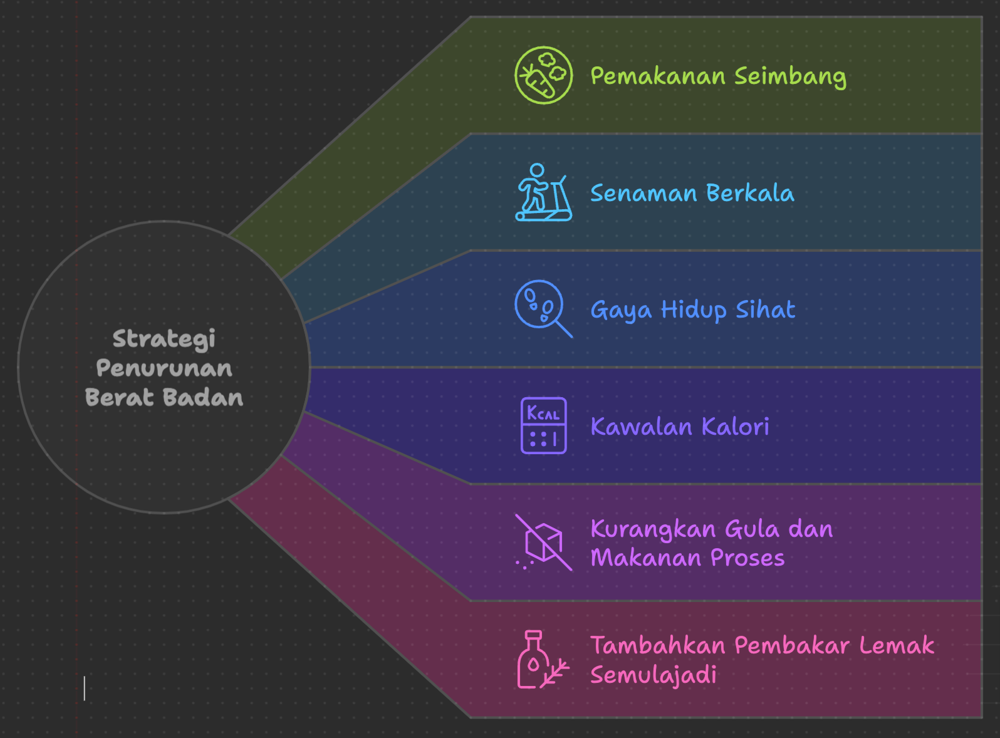

Pengenalan
Ingin mencari cara kuruskan badan yang paling berkesan? Ramai di antara kita mengimpikan badan yang ideal dan sihat, tetapi sering kali tercari-cari kaedah yang betul untuk mencapai matlamat ini. Dalam artikel ini, kami akan berkongsi pelbagai tips kurus yang terbukti membantu. Untuk lebih banyak panduan berguna, anda juga boleh meneroka artikel lain di blog kami.
1. Jaga Pemakanan dengan Seimbang
Pemakanan memainkan peranan utama dalam proses cara untuk kurus. Amalkan pemakanan yang seimbang dan elakkan makanan yang tinggi kalori, gula, dan lemak tidak sihat. Makan lebih banyak buah-buahan, sayur-sayuran, dan protein tanpa lemak. Pastikan anda minum air secukupnya setiap hari untuk kekal terhidrat dan mengelakkan rasa lapar palsu yang sering kali boleh menyebabkan anda makan berlebihan.
2. Senaman Berkala
Salah satu tips kuruskan badan yang paling berkesan ialah dengan melakukan senaman berkala. Aktiviti fizikal seperti berjalan, berlari, atau berbasikal membantu membakar kalori dan meningkatkan metabolisme. Selain itu, senaman juga boleh meningkatkan tenaga dan mood, membuatkan anda lebih bersemangat untuk mengekalkan gaya hidup yang aktif.
3. Amalkan Gaya Hidup Sihat
Selain senaman dan pemakanan, gaya hidup yang sihat juga memainkan peranan penting dalam usaha menurunkan berat badan. Elakkan gaya hidup yang kurang aktif dan cubalah untuk kekal bergerak sepanjang hari. Jika anda bekerja di pejabat, cubalah berjalan setiap jam untuk mengelakkan kekakuan otot dan memperbaiki peredaran darah. Tidur yang mencukupi juga penting kerana kurang tidur boleh mengganggu hormon yang mengawal selera makan, menyebabkan anda lebih mudah untuk makan berlebihan.
4. Kawal Pengambilan Kalori
Memantau pengambilan kalori adalah langkah yang baik untuk menurunkan berat badan. Anda boleh menggunakan aplikasi pemantau kalori untuk memerhatikan berapa banyak yang anda makan setiap hari. Dengan cara ini, anda dapat memastikan bahawa anda tidak mengambil kalori lebih daripada yang diperlukan untuk mencapai berat badan ideal. Ini adalah salah satu strategi yang membantu anda memahami corak pemakanan anda dan membuat perubahan yang diperlukan.
5. Kurangkan Gula dan Makanan Proses
Makanan yang tinggi gula dan proses boleh menghalang usaha anda untuk kurus. Gula berlebihan dalam badan akan disimpan sebagai lemak, dan makanan proses sering kali mengandungi bahan tambahan yang tidak baik untuk kesihatan. Menggantikan makanan proses dengan makanan segar dan semula jadi seperti buah-buahan dan sayur-sayuran bukan sahaja membantu menurunkan berat badan tetapi juga meningkatkan kesihatan secara keseluruhan.
6. Tambah Pembakar Lemak Semula Jadi
Beberapa makanan seperti teh hijau, kopi hitam, dan lada hitam dikatakan boleh membantu membakar lemak secara semula jadi. Mengamalkan makanan ini dalam diet anda boleh memberi sedikit dorongan kepada proses metabolisme, menjadikannya lebih mudah untuk mencapai matlamat kurus anda. Namun, pastikan anda mengimbanginya dengan diet yang sihat dan senaman yang konsisten untuk hasil yang terbaik.
7. Tetapkan Matlamat yang Realistik
Penting untuk menetapkan matlamat yang realistik dan tidak terlalu ekstrem. Penurunan berat badan yang sihat adalah sekitar 0.5 hingga 1 kilogram seminggu. Jangan terlalu terburu-buru; perubahan kecil dan konsisten lebih baik dalam jangka masa panjang. Dengan menetapkan matlamat yang realistik, anda akan lebih bermotivasi untuk mencapai kejayaan tanpa merasa terbeban.
8. Sokongan dari Keluarga dan Rakan
Perjalanan untuk mencapai berat badan ideal bukanlah mudah, dan sokongan dari keluarga dan rakan-rakan amatlah membantu. Berkongsi matlamat anda dengan mereka dan cari teman senaman yang boleh membantu meningkatkan motivasi anda. Dengan sokongan sosial, anda akan merasa lebih bersemangat dan bertanggungjawab terhadap usaha anda.
Lebih Banyak Tips untuk Hidup Sihat
Untuk lebih banyak tips kesihatan dan gaya hidup, anda boleh lawati laman utama kami di blog kami dan terus mengikuti perkembangan terkini mengenai kesihatan dan kecergasan.